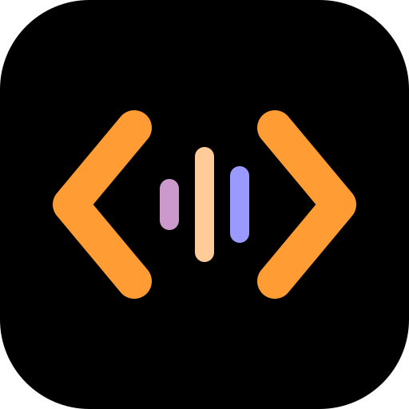

Address the computer
Say “Computer” to begin a task. Follow-ups stay in the same log entry without repeating it. Say “stop listening” to return to standing by.

PICARD CODEA tribute, built in the open
Code by voice, as Captain Picard spoke to the ship’s computer. An original, local interface with a calm spoken reply and the details on screen.
With deepest respect and gratitude to
Sir Patrick Stewart and Captain Jean-Luc Picard.
01 / The experience

Say “Computer” to begin a task. Follow-ups stay in the same log entry without repeating it. Say “stop listening” to return to standing by.
A short, complete spoken reply comes first. Exact code, names, and supporting details stay on screen. The computer must tell you what actually happened.
OpenCode keeps your log entries. Return to them through Captain’s log, marked with stardates. Settings stay in side-panel tiles.
02 / Your choices
Listening
Use your own Azure speech resource, or process speech on your computer with Whisper.
Speaking
Prebuilt voices, not performer clones. Listening and speaking can be chosen independently.
OpenCode 2 does the coding. Use any model provider it supports: GitHub Copilot, Anthropic, OpenAI, or a local model. Sign-ins stay with OpenCode.
03 / Get started
You need Node.js 22.12 or newer, Git, and a listening and speaking setup. The tested OpenCode 2 copy comes with the development dependencies.
Early source project. No npm package yet. Designed for a computer screen; this website is only an introduction, not a hosted app.
git clone https://github.com/sbroenne/picard-code.git
cd picard-code
npm ci
npm run build
npm startThen choose a model provider and set up speech using your own resources.
Read the setup guide Continuing on another computer04 / Build it with us
The tribute is the starting point. Its character, voice, and everyday usefulness are something we can develop together.
Original wording, better corrections and follow-ups, pronunciation, and comfortable timing. Calm and precise, with “Captain” now and then. Not copied dialogue or catchphrases.
New listening and speaking services, especially local options. Clear licenses, setup, hardware needs, data destinations, and honest failure handling.
Also welcome: accessible desktop controls, microphone and accent testing, easier cross-platform setup, and reliability. Ideas, evidence, and documentation count too.
Automated checks use labeled stand-ins and generated audio. They do not prove physical microphones, speakers, or real speech and model services work. Earlier real-service results predate the OpenCode 2 migration; fresh checks and real-world listening feedback are welcome.
See the checks and their limits